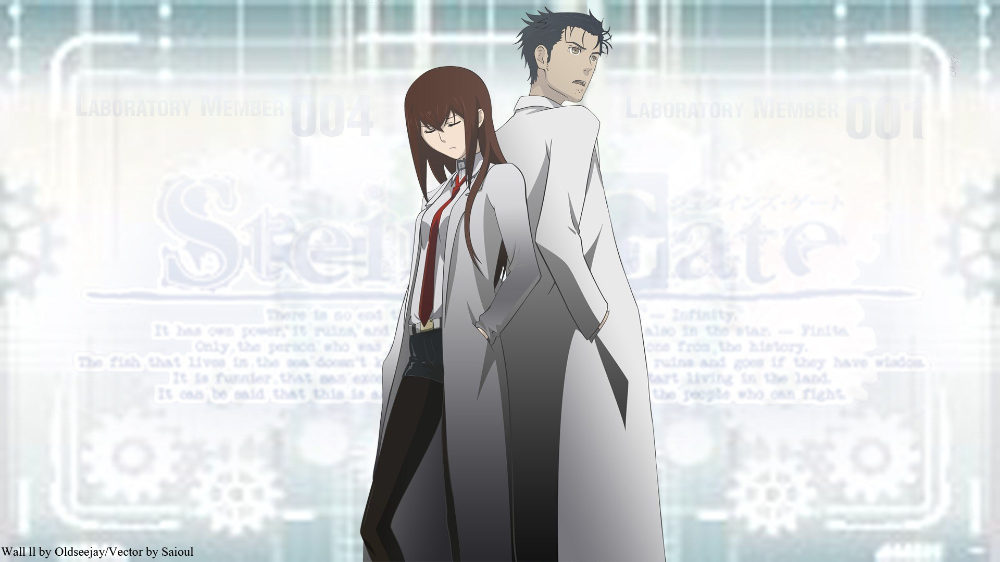
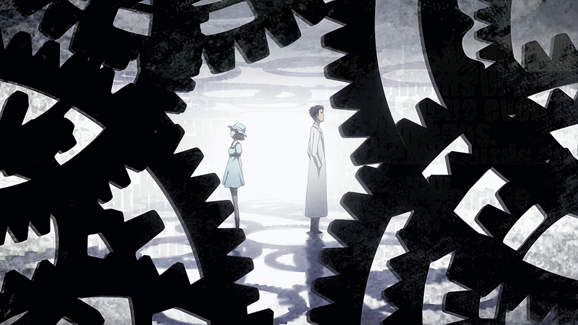

Directors: Hiroshi Hamasaki, Takuya Sato
Production Studio: White Fox
Genres: Sci-Fi, Thriller
Episodes: 24 + 1 OVA
Aired: Apr 6, 2011 to Sep 14, 2011
Synopsis
The eccentric mad scientist Okabe, his childhood friend Mayuri, and the otaku hacker Daru have banded together to form the "Future Gadget Research Laboratory," and spend their days in a ramshackle laboratory hanging out and occasionally attempting to invent incredible futuristic gadgets. However, most of their inventions are nonsensical and strange, and the only invention that's even remotely interesting is their Phone Microwave (Temporary Name), which transforms bananas into oozing green gel. When an experiment goes awry, the gang discovers that the Phone Microwave can also send text messages to the past. And what's more, the words they send can affect the flow of time and have unforeseen, far-reaching consequences that they may not be able to handle.

"Deceive your other self. Deceive the world. That is what you must do to reach Steins;Gate." - Okabe
Glass Reflection Review
My thoughts
Steins;Gate is one of the best anime I have ever seen. I just love this anime so much. It makes me go ooooooooo. I think it's so good that this is the second best anime I recommend watching for people who have bad views of anime. (The first is #1 on this list.)
{kind=link}
What I think the major reason this show is good is the story. While most shows simply glint on time travel, or allocate a few minutes of a time travel show around the actual time machine, the show actually spends pretty much every episode with time travel as the central topic. The show takes it's time showing how the characters react from being able to time travel, and more importantly, the consequences of remaking history. The story is executed so well that I think even those who casually don't watch anime will like it.
The show is filled with many nerdy references that I got many laughs from. The characters themselves are pretty upbeat and fun to listen to. The whole environment of the show is set up in such a way that makes you feel good. Maybe it's the opening, or the semicolon in the name, or the playful references to real people and institutions. I can't really explain it that well. The episodes are set up in a way that just gets you hooked on each of them, and you want to watch more and more when each one ends.
Also, bullet trains are white.

"Consider; can the universe be justifiably called infinite? Doubtful. It may not have a determinable end, but it did have a beginning, and its component parts defiantly have a limited cosmological shelf life. Splitting hair's or not, if history tells us anything it't that scientist's often make very poor poets." - Okabe
The Opening
The opening to this anime is my second favorite opeining to any anime I have seen. Along side the song is one of the most fantastic animation I have seen for any anime opening. Near the end of the series, the lyrics actually change to help build up the dramatic ending. Although this video does not contain English subtitles, it's still very nice to listen to and watch.
Episode Links
OVA
The OVA was not meant to be part of the original series, but I really think this should have been the ending for the show. It takes place after the events of Steins;Gate and answers some questions that were left in the series. Although time travel isn't mentioned all that much, I do highly recommend watching this.